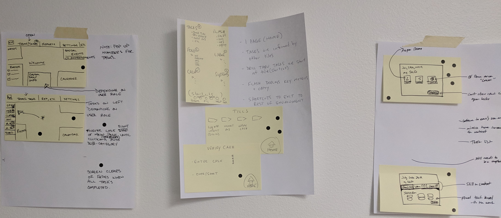
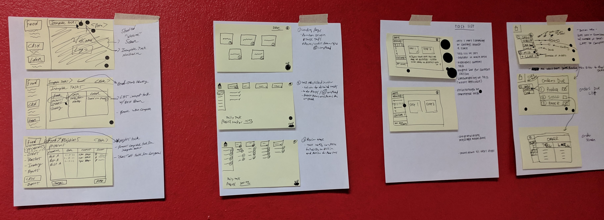

Restaurant365's software appealed to restaurant groups looking to streamline their accounting and operations reporting. R365's foundation was accounting software, but it had built out operations features over time.
A recurring concern from customers was that the accounting-focused interface of R365's web application was not always suitable for restaurant managers ("operations users"). Accounting users accessed R365 from a desktop computer and spent all day within the software, but operations users tended to access R365 via tablet only intermittently to support and supplement their daily tasks. They needed to access information quickly and see only highlights of the day-to-day restaurant operations.
In order to make the R365 experience more approachable for these users, we ran a design sprint with one of our biggest clients. Our goal was to better understand what information would be most important for these day-to-day operators. Once we discovered what information they found valuable, we could determine methods to streamline their access to this information.
Objective:
Facilitate a design sprint to imagine a new experience for operations users, enabling them to access actionable information quickly.
Design Sprint
Participants
We invited one of our clients (a quick-service restaurant group) to send representatives to our Austin office to participate in a condensed design sprint. While design sprints typically take place over five days, ours lasted only a day. In addition to members of the R365 Product team, our design sprint also consisted of an R365 sales engineer and customer success manager.
Mapping
We spent some time conversing about a restaurant's operations, hearing from experts on the R365 team as well as our client's. The product owner facilitated this discussion, taking notes on the whiteboard to delineate the daily processes for a shift manager, district leader, and general manager. The mapping session helped us understand the flow of a manager's daily activity. During this time, I wrote down relevant "How Might We" notes on post-its.
Our mapping session helped us focus our scope and set the tone for the day
As a team, we placed these "How Might We" statements on the board. Once we had defined key questions and our long-term goal, each participant used stickers to mark the "HMW" questions most pressing to them. This narrowed down our focus for this sprint to the following:
How might we show restaurant managers a step-by-step list of what to do?
How might we show users what "done" looks like?
How might we help managers get their tasks done quickly and easily as possible, without disrupting their normal workflow?
Sketching
We sourced a handful of related applications to be used as Lightning Demos. All participants discussed key elements of each application and why they were relevant for an operations dashboard.
Results of Lightning Demos
It was fascinating to hear from the participants how certain elements like charts or graphs aren't always necessary for a dashboard. We discussed how information overload can adversely affect managers, and how benchmarking tools are helpful for certain metrics.
Next, we had each participant sketch out their own detailed solutions. The variety of approaches would combat groupthink and help pinpoint what each participant thought was truly key to an operations dashboard.
Each participant's page of sketches
Decision-making
At this point, our team had a stack of solutions. We used the "Sticky Decision" method to identify the most considerate solutions and decide which sketches should be prototyped and tested. I combined those sketches into a storyboard to plan out the prototype.
Storyboard based on the most effective solution sketches
Prototyping
I spent about an hour using Sketch to quickly prototype the storyboarded sketches. I connected my Macbook Pro to the conference room's projector so that our team could view and comment on the prototype as it was taking shape.
High-level overview of operations dashboard prototype. Click to view the full prototype!
Testing and validation
The product owner showed our prototype to three R365 employees who worked closely with our operations customers in 3 separate, 1:1 interviews. While the video feed from those interview rooms was broadcast to the conference room we were using for our design sprint, I took notes.
The constructive criticism we received was in regards to accessibility - small text was hard on the eyes, which is suboptimal for restaurant managers who don't have a lot of time to focus on one screen. In addition, one person commented that the flags made them feel like they couldn't go back to previous screens.
Most of the feedback we received was extremely positive:
Strikethroughs made sense: "As a restaurant manager, it's great to see 'just do this' so I don't have to think."
Straightforward and intuitive navigation: "I love that I don't need to spend a lot of time to find anything."
"Super duper easy for someone who's never worked in the industry before"
Critical tasks clearly marked: "Nice to view non-critical tasks."
The "Nailed It!" page put a smile on their face, and they liked that managers are incentivized to wonder "How can I get ahead when I'm already at the computer?"
Reflection
I dearly enjoyed facilitating and taking part in this design sprint, and I look forward to the next time I'm able to partake in one. Here are a few tips I have for anyone looking to run a design sprint of their own:
Provide a clear agenda, so participants understand what is expected of them and what they should hope to accomplish during the sprint.
Design sprints are a great method to get stakeholders involved in an interactive way. The time you spend ideating together will help take the product to the next level!
Don’t be afraid to speak up and rein in meandering discussions. Subject-matter experts can be very passionate about their material and spend additional time developing ideas that aren’t within scope. You're limited with time in a design sprint, so make every moment count!
Prompt more passive participants to contribute.
Seek to understand why. A participant may have a good idea of what they want to see, but that might not necessarily be the most elegant solution or one that solves the problem at hand. Keep probing for answers - they'll appreciate that you care, and it may lead you down routes none of you had previously considered.
Let me know if you’re thinking about running a design sprint - I’d be happy to answer any questions you have about the process!